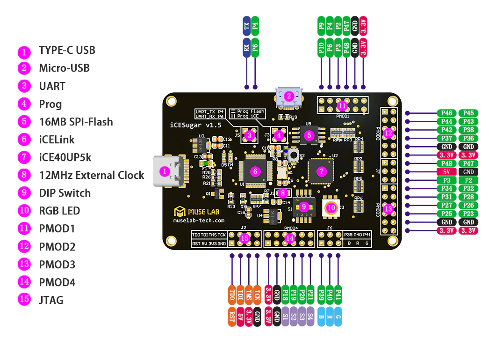

การใช้งานซอฟต์แวร์ Open Source FPGA Design Tools สำหรับบอร์ด Lattice iCE40 FPGA#
Keywords: Lattice iCE40 FPGA
▷ ชิป FPGA ของบริษัท Lattice Semiconductor#
Lattice Semiconductor เป็นอีกหนึ่งบริษัทที่เป็นผู้ผลิตชิป FPGA ซึ่งมีอยู่หลายตระกูล (FPGA Families) แบ่งออกเป็นกลุ่มตามลักษณะการใช้งาน และความสามารถของชิป เช่น การใช้งานชิป FPGA สำหรับการประมวลผลข้อมูลภาพและวิดีโอ ซึ่งต้องมีการเชื่อมต่อกับโมดูลกล้องด้วย LVDS / MIPI CSI Interface และต้องสามารถเขียนอ่านข้อมูลลงในหน่วยความจำภายในขนาดใหญ่ (Embedded Large Memory) และหน่วยความจำภายนอกได้ เช่น DDR3/DDR4 Memory เป็นต้น
- General-Purpose FPGAs
- Lattice Avant FPGA Architecture (16nm FinFET)
- Avant-E (LUT4: 196K - 477K )
- Lattice Nexus FPGA Platform (28nm FD-SOI)
- Certus-NX (LUT4: 17K - 39K)
- CertusPro-NX (LUT4: 52K - 96K)
- ECP5/ECP5-5G (LUT4: 12K - 84K)
- LatticeECP3 (LUT4: 17K - 149K)
- LatticeECP2/M (LUT4: 6K - 68K)
- LatticeXP2 (LUT4: 5K - 40K)
- Lattice Avant FPGA Architecture (16nm FinFET)
- Video Bridging & Processing FPGAs
- CrossLink-NX, CrossLinkPlus, CrossLink
- Security FPGAs (with Crypto Hard IP Cores)
- MachXO5-NX
- MachXO3, MachXO3D
- MachXO2
- MachXO
- Ultra-Low Power & Form Factor FPGAs
- iCE40 UltraPlus
- iCE40 Ultra
- iCE40 LP/HX
ซอฟต์แวร์ในการออกแบบวงจรสำหรับชิป Lattice FPGA (มีเวอร์ชันสำหรับ Windows และ Linux) ได้แก่
- Lattice Radiant Software
- Lattice Propel Design Environment
- Lattice Diamond Software
- iCEcube2 Design Software
ซอฟต์แวร์ Lattice Radiant จะใช้กับชิป Lattice FPGA หลายรุ่นที่ออกมาใหม่ เช่น Avant-E, Certus-NX / CertusPro-NX แต่ถ้าชิปเป็นรุ่นอื่น ๆ โดยปรกติ ก็จะใช้ซอฟต์แวร์ Lattice Diamond
ในกรณีที่มีการพัฒนาซอฟต์แวร์และการออกแบบวงจรที่มีซีพียูอยู่ภายในชิป FPGA (Lattice FPGA-based Processor System Design) ก็จะต้องใช้ซอฟต์แวร์ Lattice Propel ร่วมด้วย
ข้อสังเกต: ซอฟต์แวร์ iCEcube2 มีการใช้งานมาตั้งแต่ประมาณปีค.ศ. 2012 จะใช้ได้กับชิป FPGA รุ่นเก่า เช่น iCE40 LP/HX และ iCE40UP5K และอาจไม่มีการอัปเดทอีกต่อไป
ชิปในตระกูล iCE40 แม้ว่าจะเป็นชิปรุ่นเก่าและมีความจุลอจิกไม่มากนัก แต่ก็สามารถนำไปใช้งานได้กับซอฟต์แวร์ FPGA Toolchain ประเภท FOSS (Free & Open Source Software) เช่น Project IceStorm โดย Clifford Wolf โดยไม่จำเป็นต้องใช้ซอฟต์แวร์ของบริษัท Lattice Semiconductor
▷ ตัวอย่างบอร์ด iCE40 FPGA#
ตัวอย่างบอร์ด FPGA ที่มีชิป iCE40HX-1K หรือ iCE40LP/HX-8K ได้แก่
- iCEstick Evaluation Kit
- FPGA: iCE40HX-1K
- Bitstream Storage: Micron 32Mbits N25Q32 SPI Flash
- USB-SPI & USB-Serial Bridge: FTDI FT2232H
- USB Type-A Connector
- Onboard MEMS Oscillator: 12MHz
- 1x 2x6-pin Digilent Pmod Connector
- 1x IrDA Transceiver
- Release Date: August 2013
- Lattice iCE40HX-8K Breakout Board
- FPGA: iCE40HX-8K-CT256 (7,680 LUT4)
- Core Voltage: 1.2V
- I/O Banks & Voltage: 4x I/O Banks (3.3V)
- Bitstream Storage: 16MBits SPI Flash
- USB-SPI & USB-Serial Bridge: FTDI FT2232H
- Mini-USB Connector
- Onboard MEMS Oscillator: 12MHz
- 8x User LEDs
- 2x20 Pin Headers
- Release Date: November 2013
- FPGA: iCE40HX-8K-CT256 (7,680 LUT4)
- Olimex iCE40HX8K-EVB
- FPGA: iCE40HX-8K-CT256 (7,680 LUT4)
- Bitstream Storage: 16MBits SPI Flash
- Async. SRAM: Samsung 512KB K6R4016V1D (3.3V, 16-bit Data Bus)
- 2x User Status LEDs
- 2x User Buttons + 1x Reset Button
- Onboard Oscillator: 100 MHz
- Onboard FPGA Programmer: None
- External iCE40 programmer: Arduino ATmega32U4 as SPI Programmer
- Programming Connector (SPI Mode): 2x5 Pins
- Open-Source-Hardware (OSHW): Apache-2.0-License
- GitHub Repo: https://github.com/OLIMEX/iCE40HX8K-EVB
- Release Date: August 2016
- TinyFPGA BX by TinyFPGA.com (USA)
- FPGA: iCE40LP-8K (7,680 LUT4)
- Bitstream Storage: 8MBits SPI Flash
- Onboard Oscillator: 16MHz
- Open-Source TinyFPGA-USB bootloader: https://github.com/tinyfpga/TinyFPGA-Bootloader
- Open Source Hardware (OSHW) / CrowdSupply Project
- GitHub Repo: https://github.com/tinyfpga
- Price: $38.00 USD
- Release Date: March 2018
- Alchitry Cu FPGA Development Board from SparkFun / Alchitry Labs (USA)
- FPGA: iCE40HX-8K-CB132 (7,680 LUT4)
- USB Interface: FTDI FT2232HQ
- Bitstream Storage: SPI Flash
- Onboard Oscillator: 100MHz
- USB-C Connector
- 8x User LEDs
- 1x User Button
- Release Date: July 2018
- Price: $53.50 USD -iCESugar-Nano from Muse Lab (China)
- FPGA: Lattice iCE40LP1K-CM36 (1,280 LUT4)
- Bitstream Storage: SPI Flash W25Q16 (2MB)
- Onboard FPGA Programmer / Debugger: iCELink (APM32F1-based)
- Drap & Drop Programming (based on ARM Mbed DAPLink)
- MCO Clock Sources for FPGA: 8 / 12 /36 / 72 MHz
- GitHub Repo: https://github.com/wuxx/icesugar-nano
- Release Date: May 2022
รูป: Lattice iCEstick Evaluation Kit (iCE40HX-1K)
รูป: Lattice iCE40HX-8K Breakout Board
รูป: Olimex iCE40HX-8K-EVB (iCE40HX-8K)
รูป: TinyFPGA BX (iCE40LP-8K)
ในบทความนี้ได้เลือกใช้ชิป Lattice FPGA รุ่น iCE40UP5K ในตระกูล iCE40 UltraPlus Low-Power FPGA (Datasheet) เพื่อนำมาทดลองใช้งานกับซอฟต์แวร์ประเภท Open Source ของโปรเจกต์ที่มีชื่อว่า iCEStorm
ตัวอย่างบอร์ด FPGA ที่มีชิป iCE40UP5K ได้แก่
- iCEBreaker FPGA Board from BitSquared (Oregon, USA)
- FPGA: Lattice iCE40UP5K-SG48 (5,280 LUT4)
- USB Interface: FTDI FT2223H
- Bitstream Storage: 128MBits QSPI Flash (Winbond W25Q128JVSIM)
- Onboard Oscillator: 12MHz
- Micro-USB Connector
- 1x RGB LED
- 1x Push Button
- Open Source Hardware (OSHW) / CrowdSupply Project
- GitHub Repo: https://github.com/icebreaker-fpga/icebreaker
- Price: $79.95 USD
- Release Date: December 2018
- iCEBreaker-Bitsy FPGA Board from BitSquared (Oregon, USA)
- FPGA: Lattice iCE40UP5K-SG48 (5,280 LUT4)
- Onboard Oscillator: 12MHz
- Storage:
- 128MBits QSPI Flash
- 64MBits QPI Pseudo-SRAM
- USB-C Connector
- Built-in DFU Bootloader
- 2x LEDs
- 1x Push Button
- 1x RGB LED
- Open Source Hardware (OSHW) / CrowdSupply Project
- GitHub Repo: https://github.com/icebreaker-fpga/icebreaker
- Release Date: June 2020
- Tomu FPGA (Fomu) Board
- FPGA: Lattice iCE40UP5K-SG48 (5,280 LUT4)
- Storage: 1MB SPI Flash
- Onboard Oscillator: 48MHz
- Connectivity: USB 2.0 FS (12 Mbps)
- 4x Push Buttons
- 1x RGB LED
- Open Source Hardware (OSHW) / CrowdSupply Project
- GitHub Repo: https://github.com/im-tomu
- Release Date: Feb 2019
- UPduino from tinyVision.ai
- FPGA: Lattice iCE40UP5K (5,280 LUT4)
- Onboard Oscillator: 12MHz
- Onboard Programmer: FTDI FT232H USB programmer
- Storage: 4MB QSPI Flash
- 1x RGB LED
- Open Source Hardware (OSHW)
- GitHub Repo: https://github.com/tinyvision-ai-inc/UPduino-v3.0
- Price: $30.00 USD
- Pico Ice from TinyVision.ai
- FPGA: Lattice iCE40UP5K (5,280 LUT4)
- MCU: RP2040 with 4MB SPI Flash (used for FPGA Programmer)
- Storage:
- 8MB QSPI Pseudo-SRAM
- 4MB SPI Flash
- 1x RGB LED
- Open Source Hardware (OSHW)
- GitHub Repo: https://github.com/tinyvision-ai-inc/pico-ice
- Documentation: [https://pico-ice.tinyvision.ai/](https://pico-ice.tinyvision.ai/]
- Price: $35.00 USD
- iCESugar FPGA Board (v1.5) from Muse Lab (China)
- FPGA: Lattice iCE40UP5K (5,280 LUT4)
- Bitstream Storage: 8MB SPI Flash W25Q64FV, programmable by iCELink
- Onboard FPGA Programmer: iCELink (STM32F103C8T6-based)
- Drag & Drop Programming (based on ARM Mbed DAPLink Firmware)
- USB Type-C Connector
- Clock Source for FPGA: 12MHz (from iCELink via J1)
- Open Source Hardware (OSHW)
- GitHub Repo: https://github.com/wuxx/icesugar/
- Price: $32.00 USD
- iCE-V Wireless FPGA Board from QWERTY Embedded Design, LLC (USA)
- FPGA: Lattice iCE40UP5K-SG48 (5,280 LUT4)
- MCU: ESpressif ESP32-C3-MINI-1 module (ESP32C3HN4 SoC, 4MB Flash)
- Storage:
- QSPI Pseudo-SRAM (PSRAM): 8Mbits
- USB-C Connector
- Onboard Oscillator: 12MHz
- 1x RGB LED
- Open Source Hardware (OSHW) / CrowdSupply Project
- GitHub Repo: https://github.com/ICE-V-Wireless/ICE-V-Wireless
- Price: $75.00 USD
- NRFICE Board from Hurley Research (USA)
- FPGA: Lattice iCE40UP5K-SG48 (5,280 LUT4)
- MCU: Nordic Semiconductor nRF5340 SoC (Arm Cortex-M33)
- Storage: 128MBits Flash
- USB Interface: Built-in SEGGER JLink-OB Programmer/Debugger
- 2x USB-C Connector
- USB-C for nRF5340
- USB-C for SEGGER JLink-OB
- Arduino form-factor
- 2x RGB LEDs
- Open Source Hardware (OSHW) / CrowdSupply Project
- Release Date: May 2023
- GitHub Repo: https://github.com/HurleyResearch/nRFICE
- iCE40UP5K FPGA Board from eetree.cn
- iCE40UP5K FPGA + STM32G031 MCU Board from eetree.cn
รูป: บอร์ด iCEBreaker
รูป: บอร์ด iCEBreaker-Bitsy

รูป: บอร์ด TinyVision.ai Pico Ice
รูป: บอร์ด iCE-V Wireless FPGA Board
รูป: บอร์ด TinyVision.ai UPduino v3.0

รูป: บอร์ด iCE40UP5K FPGA + STM32G031
รูป: บอร์ด NRFICE Board
รูป: บอร์ด iCESugar FPGA Board (v1.5)

รูป: การระบุองค์ประกอบของบอร์ด iCESugar FPGA Board (v1.5)
รูป: ผังวงจร Schematic ของบอร์ด iCESugar FPGA Board (v1.5)
▷ Lattice iCE40UP5K FPGA#
ข้อมูลเชิงเทคนิคเกี่ยวกับชิป iCE40UP5K
- iCE40 UltraPlus Family
- 40nm Low-Power CMOS Process
- On-chip Volatile Configuration RAM (CRAM)
- On-chip Non-volatile One-Time-Programmable Configuration Memory (NVCM)
- Core Voltge: 1.2V
- Chip Package: QFN-48
- Logic Cells (LUT4 + Flip-Flop): 5,280
- sysMEM Embedded Block RAM (EBR) Memory: 30 Blocks, 4Kbits per Block
- Single-Port RAM (SPRAM) Memory: 4 Blocks, 256 KBits per Block
- sysDSP DSP Blocks (16x16-bit Multiplier, 32-bit Accumulator): 8 Blocks
- sysCLOCK PLL: 1
- I2C Controller (Hard IP): 2
- SPI Controller (Hard IP): 2
- On-board Oscillator: 48MHz (HF) & 10kHz (LF)
- 24mA PWM-based LED Driver (Current Sink): 3
- Global Clock Input Pins: 6
- SPI-based Device Programming
- SPI Flash Mode: Programming SPI Flash Memory (MCU as SPI Master)
- SPI Peripheral Mode: Configuring On-chip CRAM (MCU as SPI Master, FPGA as SPI Slave)
- IC Package: 48-pin QFN (39 I/Os max.)
- Software Support:
- Lattice Diamond
- iCEcube2
รูป: แผนผังแสดงองค์ประกอบเชิงสถาปัตยกรรมภายในชิป iCE40UP5K
รูป: โครงสร้างภายในของ 4-Input LUT + Flip-Flop และ Logic Cells
รูป: องค์ประกอบภายใน I/O Block

รูป: องค์ประกอบภายในของ sysDSP DSP Block
▷ การติดตั้งซอฟต์แวร์ FOSS FPGA Tool สำหรับ Ubuntu#
การทำคำสั่งเพื่อทำขั้นตอนการติดตั้งโปรแกรมต่าง ๆ ที่เกี่ยวข้อง มีดังนี้
$ sudo apt install \
build-essential git mercurial cmake clang pkg-config \
bison flex gawk tcl-dev xdot graphviz \
libffi-dev libreadline-dev \
python3 python3-dev libftdi-dev \
libboost-dev libboost-filesystem-dev \
libboost-thread-dev libboost-program-options-dev \
libboost-iostreams-dev libeigen3-dev
## Build / Install Yosys
$ mkdir -p ~/Tools && cd ~/Tools
$ git clone https://github.com/YosysHQ/yosys.git
$ cd yosys
$ make -j $(nproc)
$ sudo make install
$ mkdir -p ~/Tools && cd ~/Tools
$ git clone https://github.com/YosysHQ/icestorm.git
$ cd icestorm
$ make -j $(nproc)
$ sudo make install
# Check the version
$ yosys --version
Yosys 0.31+45 (git sha1 ff3c7873f, clang 14.0.0...)
# see: https://github.com/YosysHQ/nextpnr/blob/master/README.md
## Build / Install NextPNR
$ mkdir -p ~/Tools && cd ~/Tools
$ git clone https://github.com/YosysHQ/nextpnr.git
$ cd nextpnr
# Option 1: No GUI
$ cmake -DARCH=ice40 -DCMAKE_INSTALL_PREFIX=/usr/local .
# Option 2: with GUI
$ sudo apt install qtbase5-dev qt5-qmake
$ cmake -DBUILD_GUI=ON -DARCH=ice40 -DCMAKE_INSTALL_PREFIX=/usr/local .
$ make -j $(nproc)
$ sudo make install
ในกรณีที่ใช้บอร์ด Muse Lab iCE-Sugar FPGA Board
แนะนำให้ติดตั้งโปรแกรม icesprog
## Build / Install the 'iceprog' tool
$ sudo apt install libhidapi-dev libusb-1.0-0-dev
$ mkdir -p ~/Tools/icesprog && cd ~/Tools/icesprog
$ wget https://github.com/wuxx/icesugar/raw/master/tools/src/icesprog.c
$ gcc -Wall icesprog.c -o icesprog \
-I/usr/include/libusb-1.0 -I/usr/include/hidapi \
-lusb-1.0 -lhidapi-libusb
$ sudo cp icesprog /usr/local/bin/
▷ วงจรสาธิตการใช้งานสำหรับบอร์ด iCE-Sugar#
ตัวอย่างวงจรสาธิตสำหรับบอร์ด iCE-Sugar ประกอบด้วย 3 ไฟล์
leds.vเป็นโค้ด Verilog ที่สร้างวงจรตัวนับแบบไบนารี แล้วใช้ 3 บิต เป็นเอาต์พุตนำไปต่อกับขา RGB LED บนบอร์ดทดลองleds.pcfเป็นไฟล์ Physical Constraint File เพื่อกำหนดตำแหน่งขาของชิป สำหรับ I/O ของวงจรMakefileเป็นไฟล์สำหรับใช้กับคำสั่งmakeเพื่อคอมไพล์โค้ดให้เป็นไฟล์บิตสตรีม (.bin)
File: leds.v
module top(
input wire clk,
output wire LED_R,
output wire LED_G,
output wire LED_B
);
reg [24:0] counter = 0;
assign LED_R = ~counter[21];
assign LED_G = ~counter[22];
assign LED_B = ~counter[23];
always @(posedge clk) begin
counter <= counter + 1; // increment the counter value
end
endmodule // top
File: leds.pcf
# For the iCE40 UltraPlus (iCE40UP5K-QFN): iCE-Sugar Board
set_io clk 35
set_io LED_R 41
set_io LED_G 40
set_io LED_B 39
File: Makefile
filename = leds
pcf_file = $(filename).pcf
build:
yosys -p 'synth_ice40 -top top -json $(filename).json' $(filename).v
nextpnr-ice40 \
--up5k --package sg48 \
--json $(filename).json \
--pcf $(pcf_file) \
--asc $(filename).asc
icepack $(filename).asc $(filename).bin
prog_sram:
iceprog -S $(filename).bin
prog_flash:
iceprog $(filename).bin
clean:
rm -rf $(filename).blif $(filename).asc $(filename).bin
เมื่อได้ไฟล์ leds.bin ก็สามารถนำไปโปรแกรมลงชิป FPGA ได้ ให้เชื่อมต่อบอร์ด iCE-Sugar
กับคอมพิวเตอร์ของผู้ใช้ทางพอร์ต USB แล้วจะมองเห็นไดรฟ์ปรากฎที่มีชื่อว่า iCELink
จากนั้นให้คลิกเลือกไฟล์ .bin แล้วลากไปยังไดรฟ์ดังกล่าว
ตัวอย่างการใช้คำสั่ง icesprog
$ lsusb | grep "ID 1d50:602b"
Bus 001 Device 010: ID 1d50:602b OpenMoko, Inc. FPGALink
$ icesprog -p
probe chip
board: [iCESugar]
flash: [w25q64] (8MB)
done
$ icesprog -e -w leds.bin
flash offset: 0x00000000
write flash (104090 (0x1969a) Bytes)
write 0x00000000
write 0x00010000
done
ข้อสังเกต:
iceprogเป็นโปรแกรมของ Project IceStorm สำหรับการอัปโหลดไฟล์บิตสตรีม iCE40 ที่ใช้กับอุปกรณ์ FT2232H-based Lattice iCE Programmericesprogเป็นโปรแกรมของ Muse Lab ที่ใช้กับอุปกรณ์ STM32F1-based Programmer เพื่อเขียนไฟล์บิตสตรีมไปยังชิป SPI Flash บนบอร์ด iCE-Sugar
▷ แหล่งข้อมูลศึกษาเพิ่มเติม#
- IceBreaker FPGA Board
- Project F - iCE40 FPGA Toolchain on Linux
- Project F - FPGA Development & Examples
- iCE40 UltraPlus Examples
- SPRAM on iCE40 FPGA
- PulseRain Reindeer - RISCV RV32IM Soft CPU
- The Hobbyists Guide to FPGAs
- An In-Depth Look at the ICE-V Wireless FPGA Development Board
- Open Source IceStudio: A graphical FPGA design tool for iCE40 FPGA
▷ กล่าวสรุป#
บทความนี้ได้นำเสนอเกี่ยวกับชิป FPGA ตระกูล iCE40 ของบริษัท Lattice Semiconductor และบอร์ด FPGA ที่มีจำหน่าย ซึ่งบอร์ดส่วนใหญ่ที่ได้มีการสำรวจมาเป็นตัวอย่างนั้น เป็นฮาร์ดแวร์ประเภท Open Source Hardware (OSHW) ที่มีการเปิดเผยและแชร์ไฟล์ของวงจรและการออกแบบ PCB จุดเด่นของบอร์ด iCE40 FPGA เหล่านี้คือ การใช้ซอฟต์แวร์ประเภท Open Source ภายใต้โครงการ IceStorm สำหรับการออกแบบวงจรดิจิทัลในชิป FPGA
This work is licensed under a Creative Commons Attribution-ShareAlike 4.0 International License.
Created: 2023-08-12 | Last Updated: 2023-08-16